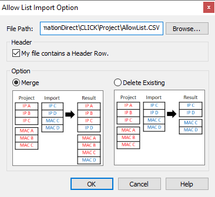

|
|
|
Topic: CL314 |
Allow List Import Options |
|
|
The Allow List Import Option feature allows the user to Import an external CSV file of:
To ensure correct formatting, start with a CSV file exported using the Export Allow List function. The CSV file is easily read and edited using Excel or Notepad. The CSV file can be re-imported or shared with other project files. The file can contain up to 32 rows of IP addresses, and up to 32 rows of MAC addresses.
|
|
Note: The easiest way to begin an Allow List CSV file is to first Export the existing Allow List. |
|
When you import a new Allow List file, it can be merged in either of two ways with the Project values or it can replace the existing Project values. Select Delete Existing or Merge Priority using the radio buttons.

File Path: Select the folder where you have the CSV file.
Merge or Delete Existing: Select the radio button for the desired Merge priority or Delete the existing table entries prior to importing the new Allow List Addresses. The active Project Addresses can be merged with the Imported csv file. Refer to the example on the dialog. Merge preserves all unique Address entries and prioritize the Address entries that appear in the Project and the Imported file. Choose Delete Existing if you want to use only the Imported file.
If the CSV file is open in another program, you will receive an Error Message.
Failure to maintain the IP/MAC Address data format, may result in Import Errors.